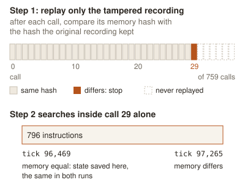
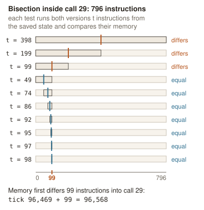

09 · Record and replay
A debugger that goes backwards replays the run it's debugging, and Lob can't be replayed by running it again. With the server defences on, the game asks a server for the wind, and the server's answers change from run to run. By the end of this lesson your recorder.mjs will record a run, replay it exactly without the server, notice the moment a replay leaves its recording, and find the first instruction at which a tampered recording, a copy with one answer or call changed, parts from the original.
The tool this lesson mirrors is rr, a debugger for Linux programs that records every input a program receives from outside so the run can be replayed exactly.
Start
Run these commands from this course's directory, in the project you used for lesson 08. Before this lesson your project runs Lob through project/machine.mjs, and project/recorder.mjs is a stub, so node lab.mjs record, replay and diverge stop with "not written yet". After it, those three commands work on your own code, and lessons 10 and 11 replay the recording you make here.
Your machine must pass lesson 08's checks first: node lab.mjs check project 08. If it doesn't, and you want to go on with this lesson, make a new project from lesson 08's supplied Machine with node examples/start-chapter.mjs project9 supplied and use project9 wherever this lesson says project.
Code scope: walk through six marked regions of project/recorder.mjs, 144 lines including blank lines: record, recorded-imports, replay, find-call, run-from and bisect. The file around them is supplied: the module's two imports, the course's memory hash and the error class a replay throws when it leaves its recording. The finished file, the end-of-unit checkpoint, is examples/recorder-checkpoint.mjs, 185 lines. Two parts of lab.mjs are toured below, because they decide what the checks and the lab can see of your code. Unit 08's 647-line Machine checkpoint is supplied for anyone whose machine isn't finished.
Time: allow about 20 to 30 minutes to read and 1.5 to 3 hours to implement, diagnose and try the new application. These are planning estimates, not measured learner times.
Choose a route. Each command below writes project/recorder.mjs only if the project has none yet, or if it is still the untouched stub that node lab.mjs start made. If you have edited that file, the command refuses and changes nothing.
- Type in the important parts:
node examples/start-recorder.mjs project write. This copiesstarter/recorder-build.mjs, which has the supplied parts and six unfinished regions. Type or paste each located listing below. - Start with working code:
node examples/start-recorder.mjs project supplied. This copiesexamples/recorder-checkpoint.mjs. Follow each explanation and run each command instead of transcribing, then do the failure and repair and the new application. This is supplied implementation, not your own work. - Use AI for the changes: start with the type-in route (
write). Give the assistantAPI.md, this lesson and your file, one region at a time. Ask it to explain what each region keeps and why; run and inspect what it writes. Record the actual assistance you used.
Both routes also create project/trim.mjs, the unfinished new application, if it doesn't exist yet. Prefer to write the whole recorder from API.md with no listings? Don't run either command, and fill the stub node lab.mjs start gave you.
Run the first check with the description matching where you started:
# Type-in route (write), including AI users before requesting changes:
node lab.mjs check project 09 --help-used "chapter write starter; six regions unfinished"
# Supplied route:
node lab.mjs check project 09 --help-used "supplied recorder checkpoint; initial baseline"The route command records write or supplied in PROJECT.json, and every check receipt keeps it as unit09_start_route. That says where you began, not who wrote your current code; keep using --help-used to say what helped each attempt. The type-in route fails all eight checks with not written yet, and the supplied route passes them. Either result is a baseline, not evidence of understanding.
Keep the // region: NAME and // endregion: NAME markers. A listing replaces everything between its matching pair, including the unfinished function there. The listings omit the marker lines. To recover later without losing edits, make a new project with node examples/start-chapter.mjs project-recovery supplied, then run node examples/start-recorder.mjs project-recovery supplied, and compare its recorder.mjs with yours. Don't copy the checkpoint over your attempt.
What makes a run repeat
Make two recordings of the same calls with two different worlds and compare them. The world is the outside the game talks to. makeWorld(seed) answers its imports, and the seed is the server's own. You'll make the recordings at the end of the next section, once your record works.
The two recordings play the same game, seed 5 and mode 1, with the same 759 calls. They differ from the very first call. game_init starts round 1, and round 1 asks the server for its wind level with server_round(1). World 42 and world 43 answer differently, so memory differs after game_init returns.
Everything else in a run is fixed: the program, the starting memory and the calls. The only things that can change between two runs of the same calls are the answers, the values imports return. So a recording keeps two lists: the calls into the game, in order, and every answer the game received, in order.
Record
record(program, imports, calls) runs the calls on a new machine. Give the machine imports that call the real ones and push each answer onto a list as it passes: { name, args, result }. Keep each call's result, and after each call the memory hash, hashMemory(machine.state.memory) from public/hash.mjs. The whole recording is plain JSON, so it can be saved and read back.
Note every answer as it passes
In project/recorder.mjs, replace the record region:
Replace the record region.
export function record(program, imports, calls) {
const answers = [];
const noting = {};
for (const { name } of program.imports) {
noting[name] = (...args) => {
const result = imports[name](...args);
answers.push({ name, args, result });
return result;
};
}
const machine = new Machine(program, noting);
const results = [];
const hashes = [];
for (const call of calls) {
const result = machine.invoke(call.name, call.args);
results.push(result === undefined ? null : result);
hashes.push(hashMemory(machine.state.memory));
}
return {
format: 'ttd2-recording-1',
program: program.name,
sha256: program.sha256,
calls: calls.map((call) => ({ name: call.name, args: [...call.args] })),
results,
answers,
hashes,
};
}The machine never sees the real imports. It gets noting, one function per import the listing names, and each of those passes the question to the real import, notes the answer and hands it back unchanged. The world is asked exactly once per question, which check 09.record counts: asking it a second time to note the answer would move the server on and record an answer the game never got. args is the rest parameter, a fresh plain array, so the recording can keep it.
The machine is new, so the run starts from the listing's memory, as every replay will. invoke returns undefined for a function with no result, and JSON has no undefined, so the recording stores null. Each hash is taken after its call returns. The calls are copied, so a caller who later edits its own list doesn't change the recording.
Lob's two-shot recording above holds 759 calls and 277 answers. Question 09a: which of the four imports gave most of those 277 answers? Commit before you make the recording:
node lab.mjs predict project 09a YOUR_ANSWERThe memory hash after every call isn't needed to replay. It costs 64 hex characters per call. In return, a replay can check at every call that its memory still matches the recording, and the last section of this lesson can find a divergence without replaying the original. rr offers a similar check as an option, comparing checksums of a program's memory as it replays.
Check 09.record compares your recording with an independent run that counts every answer, and 09.recording-json round-trips it through JSON.stringify.
Once record works, make the two recordings of the first section, then look inside them:
node lab.mjs record project --world 42 --out project/run42.json
node lab.mjs record project --world 43 --out project/run43.json
node examples/show-recording.mjs project/run42.json project/run43.jsonexamples/show-recording.mjs prints the size of each recording, its first call and first answer, and the first call after which the two memory hashes differ:
project/run42.json: ttd2-recording-1, program lob
759 calls, 277 answers, 759 hashes
call 0: game_init(5, 1) returned null; memory hash after it 674f60c95fd31eab...
answer 0: server_round(1) returned 1
project/run43.json: ttd2-recording-1, program lob
759 calls, 277 answers, 759 hashes
call 0: game_init(5, 1) returned null; memory hash after it 405cce2ea030c094...
answer 0: server_round(1) returned -2
First call whose memory hashes differ: call 0, game_init(5, 1)The calls are the same and the first answer is not, so the hashes part after call 0. That is the claim of the first section, read from your own recordings.
Replay
replay(program, recording) runs the recording's calls on a new machine whose imports answer from the recording, in order, without any world. Keep a position in the answers list. When the game calls an import, the next recorded answer must be for the same import with the same arguments. Return its result and move on.
If it isn't, the replay has left its recording. The game asked a question the recording can't answer, and any value you returned would be invented. Throw an error with a divergence field, { tick, call, reason }. call is the index in recording.calls of the call into the game being replayed, reason says in words what went wrong, and tick is the number of instructions the machine had finished before the call instruction that asked, so that call instruction's own event would say tick + 1. With check: true, a call whose result or memory hash differs from the recording is a divergence too.
Answer from the recording, or refuse
Replace the recorded-imports region. It builds the imports a replay gives its machine:
Replace the recorded-imports region.
export function recordedImports(program, recording, machineOf, start = 0) {
let next = start;
const imports = {};
for (const { name } of program.imports) {
imports[name] = (...args) => {
const answer = recording.answers[next];
const state = machineOf().state;
const where = { tick: state.tick, call: state.calls - 1 };
const asked = `${name}(${args.join(', ')})`;
if (!answer)
throw new ReplayDivergence({
...where,
reason: `the program asked ${asked} after the recording's last answer`,
});
if (
answer.name !== name ||
answer.args.length !== args.length ||
answer.args.some((value, i) => !Object.is(value, args[i]))
)
throw new ReplayDivergence({
...where,
reason: `the program asked ${asked}, the recording holds ${answer.name}(${answer.args.join(', ')})`,
});
next++;
return answer.result;
};
}
return { imports, position: () => next };
}next is the position in the answers list. It lives in the closure, outside machine.state, which is deliberate: it belongs to this replay, not to the game, and restoring a copy of the game's state must not move it. position() reports it, and start lets a later search begin answering partway through the recording.
The imports have to exist before the machine does, because the Machine's constructor takes them. So they receive machineOf, a function that returns the machine once it has been made, and read the machine's state only when the game asks. An import runs in the middle of the call instruction's step. Lesson 08's Machine adds one to state.tick only after an instruction's work is done, so at that moment state.tick is the number of instructions finished before the call instruction, the tick the contract asks for. A machine that counts the tick before running the instruction makes every such tick one too high, and check 09.replay-questions says so. begin has already counted the call into the game, so its index is state.calls - 1.
Object.is compares each argument exactly, so a sin asked of an angle one part in 2^40 away from the recorded one is still a different question. Check 09.replay-questions makes that edit, among others.
Run the calls and compare
Replace the replay region:
Replace the replay region.
export function replay(program, recording, { check = true } = {}) {
let machine;
const answered = recordedImports(program, recording, () => machine);
machine = new Machine(program, answered.imports);
const results = [];
const hashes = [];
recording.calls.forEach((call, k) => {
const value = machine.invoke(call.name, call.args);
const result = value === undefined ? null : value;
const hash = hashMemory(machine.state.memory);
results.push(result);
hashes.push(hash);
const where = { tick: machine.state.tick, call: k };
if (check && !Object.is(result, recording.results[k]))
throw new ReplayDivergence({
...where,
reason: `call ${k} returned ${result}, the recording says ${recording.results[k]}`,
});
if (check && hash !== recording.hashes[k])
throw new ReplayDivergence({
...where,
reason: `memory after call ${k} differs from the recording`,
});
});
return { machine, results, hashes };
}machine is declared before the imports are made and assigned after, so the closure passed to recordedImports can return it. A question the recording can't answer throws from inside invoke, with the tick of the call instruction. A wrong result or hash can only be seen once a call has returned, so that divergence carries the tick at which the call returned. With { check: false } the replay still refuses an unanswerable question and keeps going past a wrong result or hash. The replay never changes recording, because the debugger in lesson 10 replays one recording many times.
Tour learnerRecorder in lab.mjs now. Before it imports your recorder.mjs, it wraps Machine.prototype.step from your machine.mjs with a counter, and the checks do the same. That counter is how every instruction count in this lesson is measured, so your recorder must make its machines from the Machine it imports from ./machine.mjs and run every instruction through step. invoke does, because it is a loop over step.
Try it on a recording with one answer's argument changed. Answers and calls are numbered from 0. In the recording above, the first cos answer is answer 1. Change its argument from 0.8028514385223389 to 0.8128514385223389 and replay the copy:
node lab.mjs tamper project/run42.json --answer 1 --arg 0.01 --out project/edited.json
node lab.mjs replay project project/edited.jsonAnswer 1 (cos) now says it was asked cos(0.8128514385223389), not cos(0.8028514385223389).
Wrote project/edited.json. Its hashes are still the original's.
The replay left its recording at tick 88494, call 19: the program asked cos(0.8028514385223389), the recording holds cos(0.8128514385223389)The replay stops at call 19, the key press that fires the first shot, at tick 88,494. The game asks for the cosine of the barrel's angle, and the recording holds the cosine of another angle. node lab.mjs replay project project/run42.json replays the untouched recording to its end.
Tour tamperCmd in lab.mjs too. It changes one answer or one call in a copy and writes it out with the original's hashes untouched, which is why the replay above could compare every call with what the untampered run did.
Check 09.replay replays recordings of Lob and Lob II with no world at all. 09.replay-questions edits recordings and expects your error at the right tick and call, and 09.replay-check changes a recorded result or hash and expects a divergence only with check: true.
Finding where a tampered replay first differs
tampered is a copy of a recording with one answer changed, and its hashes are still the original's. After which tick does its replay first have different memory from the original's?
node lab.mjs tamper project/run42.json --answer 12 --add 0.25 --out project/tampered.jsonAnswer 12 is the tenth server_wind answer, the wind during one game frame of the first shot's flight. Changing it changes that game frame's acceleration, and memory differs from the moment the shell's new position is stored.
The only test you have is whole-state equality, where two memories are the same if their hashes are the same. You can only compare hashes at moments you choose, not ask "which instruction made this hash different?" That is the setting for bisection. Keep two moments, one where the memories are known equal and one where they are known different, test the moment halfway between, and keep the half where they still change from equal to different.
Running both replays from tick 0 for every halfway test would cost up to two whole runs per test. The recording's hashes make it cheaper:
- Replay only the tampered recording, one call at a time, and compare the hash after each call with the original's recorded hash. The first call whose hash differs is the call where they part. Call it k. Before each call, keep a
structuredCloneof the state, so that when call k ends different, you hold the state at its start, and that state is the same in both runs, because call k - 1 ended with equal hashes. - Search inside call k, from the saved state. Two machines started from it, one answering from the original's answers and one from the tampered ones, run the two versions of the call. Either of these finds the instruction: - Bisect. A test at offset t runs each machine t instructions from the saved state and compares their memory hashes. About log2 of the call's length tests, each replaying up to the whole call twice. - Step side by side. Step both machines together and, after each step, compare the bytes either one just wrote. It costs twice the offset of the divergence and finds it exactly, even if the memories later become equal again.

For the tampered recording above, step 1 stops at call 29, a game frame of 796 instructions starting at tick 96,469, and keeps the state saved at that tick for step 2.
Inside one call, stepping side by side is the cheaper of the two, and either meets the checks. Bisection wins where only whole states can be compared. Step 1 is that case, because one side of it exists only as recorded hashes, and so is any test you can run only at chosen moments, such as comparing two debugging sessions that are too slow to step together. Bisection also assumes a difference, once made, lasts to the end of the call, and the checks' tampers do.
Question 09b: bisection over the 796 instructions of call 29 starts knowing memory is equal after 0 of them and different after all 796. Each test halves the interval. How many tests does it take, at most, until the two ends are one instruction apart? Commit:
node lab.mjs predict project 09b YOUR_ANSWERFind the call from the recorded hashes
Step 1 goes in the find-call region:
Replace the find-call region.
export function firstDivergence(program, original, tampered) {
let machine;
const answered = recordedImports(program, tampered, () => machine);
machine = new Machine(program, answered.imports);
for (let k = 0; k < tampered.calls.length; k++) {
const start = globalThis.structuredClone(machine.state);
const answerAt = answered.position();
let left = false;
try {
machine.invoke(tampered.calls[k].name, tampered.calls[k].args);
} catch (error) {
if (!(error instanceof ReplayDivergence)) throw error;
left = true;
}
const same =
!left && hashMemory(machine.state.memory) === original.hashes[k];
if (same) continue;
return bisectCall(program, original, tampered, k, start, answerAt);
}
return null;
}Only the tampered recording is replayed. The original takes part through its hashes alone, which is why this loop costs one replay up to the call where the two part, not two. Copying the state before every call costs memory and time, but it runs no instructions, so the counter doesn't see it. answerAt is the answer position at the start of the call: the search inside the call has to answer the same questions from the same place in both recordings.
A tampered replay can also ask a question its recording doesn't hold, a cos of an angle the tamper changed, for example. That counts as a call that ends different. A key the game ignores leaves the hash equal, so the loop goes on, and a tamper that never changes memory reaches the end and returns null.
Run one call from a saved state
Replace the run-from region:
Replace the run-from region.
function runFrom(program, recording, k, start, answerAt, limit) {
let machine;
const answered = recordedImports(program, recording, () => machine, answerAt);
machine = new Machine(program, answered.imports);
machine.state = globalThis.structuredClone(start);
machine.begin(recording.calls[k].name, recording.calls[k].args);
let ran = 0;
try {
while (machine.running && ran < limit) {
machine.step();
ran++;
}
} catch (error) {
if (!(error instanceof ReplayDivergence)) throw error;
return { machine, ran, left: true };
}
return { machine, ran, left: false };
}Because the machine keeps everything in machine.state, as lesson 08 required, assigning a copy puts a new machine at the exact start of call k. The copy matters again here, because each test runs from the same saved state and must not change it for the next one. begin starts the call and step runs at most limit instructions of it. ran counts instructions that finished, so a question the recording can't answer stops the run with left set and ran short of the limit.
Bisect inside the call
Replace the bisect region:
Replace the bisect region.
function bisectCall(program, original, tampered, k, start, answerAt) {
const run = (recording, limit) =>
runFrom(program, recording, k, start, answerAt, limit);
const a = run(original, Infinity);
const b = run(tampered, Infinity);
const differs = (t) => {
const x = run(original, t);
const y = run(tampered, t);
if (y.left && y.ran < t) return true;
return (
hashMemory(x.machine.state.memory) !== hashMemory(y.machine.state.memory)
);
};
let lo = 0; // memory is equal after lo instructions of call k
let hi = Math.max(a.ran, b.left ? b.ran + 1 : b.ran); // and differs after hi
while (hi - lo > 1) {
const mid = (lo + hi) >> 1;
if (differs(mid)) hi = mid;
else lo = mid;
}
return start.tick + hi;
}The two first runs measure each version of the call. Memory is equal after 0 instructions, because both start from the same state, and different once both versions have finished, because that is how step 1 chose this call. A tampered run that left its recording counts as different from the instruction that asked, which is why hi is then one more than the instructions it finished. differs(t) runs both versions t instructions from the saved state, and each loop keeps the half whose ends are still equal and different. When the ends are one apart, hi instructions into the call is the first moment memory differs, and the instruction that made it so has the tick start.tick + hi, the tick its own event reports.
Run the search on the tamper above:
node lab.mjs diverge project project/run42.json project/tampered.jsonMemory first differs after tick 96568.
Your firstDivergence ran 101431 instructions.
Each test halves the interval still in question. Your firstDivergence returns 96,568, or null when the two replays never differ, for example when an answer is "changed" to the value it already had.
The lab prints how many instructions your search ran. The worked solution finds the call from the hashes and then bisects inside it, and runs 101,431 for this case: 97,265 to replay the tampered recording up to the end of call 29, and the rest to run both versions of call 29 and bisect inside it. Stepping side by side inside the call runs fewer, because it costs only twice the distance to the divergence. Bisecting from tick 0 instead, replaying both recordings from the start for every test, takes about 20 tests over the run's 652,927 instructions, and each test replays both recordings up to the tick it tests.
Check 09.divergence runs tampers whose first differing ticks are known, and compares the tick firstDivergence returns with each. 09.divergence-none runs tampers that change no memory, including an answer "changed" to the value it already had, and expects null for each. 09.divergence-budget runs late tampers on long runs. For each it first compares the tick firstDivergence returns with the known one, as 09.divergence does, and only then counts your instructions, failing a search that replays from the start for every test. 09.record, 09.recording-json, 09.replay, 09.replay-questions and 09.replay-check call record or replay and never call firstDivergence.
All six regions are filled. Run the unit's checks, describing what you did:
# After filling the type-in route's starter from the listings:
node lab.mjs check project 09 --help-used "filled six regions from chapter listings"
# After following the supplied route:
node lab.mjs check project 09 --help-used "supplied recorder checkpoint; followed the explanations and tours"All 8 checks should pass. If one fails, its first mismatch names the section to reread. Keep the failing attempt and your explanation before you edit.
Break the saved state, then repair it
In your project only, change the first line inside the loop of find-call so that it keeps the machine's own state instead of a copy:
const start = machine.state;Question 09d: with this change, how many of the eight checks fail? Before you run anything, write in project/report.md which ones you expect to fail and why, then commit the number. Then run the check with --help-used describing this prescribed change, and run the search again:
node lab.mjs predict project 09d YOUR_ANSWER
node lab.mjs check project 09 --help-used "prescribed change: find-call keeps machine.state without a copy"
node lab.mjs diverge project project/run42.json project/tampered.jsonCompare the checks that failed with what the lab said after your prediction. Compare the tick diverge prints with 96,568 and with the length of call 29. Explain the difference: what does start hold by the time bisectCall reads start.tick, and which state does runFrom restore? Which of the checks only record and replay, and what did they report? Restore the copy, rerun the check and keep both attempts. This change is guided practice; the new application below asks for behavior none of these listings implements.
A different tamper
Question 09c: in project/run42.json, call 12 is a key press, the last of eleven presses of up (key 3). Up and down (key 4) change the power, and N (key 6) starts a new round. API.md lists every key under "public/sessions.mjs". Change call 12 to down with node lab.mjs tamper project/run42.json --call 12 --key 4 --out project/key.json, then predict whether firstDivergence will find a tick inside call 12 or later. Answer inside or later, and commit before you run diverge:
node lab.mjs predict project 09c YOUR_ANSWER
node lab.mjs diverge project project/run42.json project/key.jsonUse it on a new case: trim a recording
A short recording that still shows a bug is easier to share and cheaper to replay than the whole run. Write trimRecording(program, recording, n) in project/trim.mjs, which both route commands created. If you didn't use them, copy starter/trim.mjs to project/trim.mjs first. No finished version is supplied, and none of the listings above does this. Its contract:
nis an integer from 0 to the number of calls in the recording. Refuse any other value with an error before running any instruction.- Return a new recording of the first
ncalls: the sameformat,programandsha256, the firstncalls, results and hashes, and exactly the answers the game asked for during those calls, in order. It must equal whatrecordmakes when it is given only the firstncalls and a fresh copy of the same world. - Run no more instructions than the first
ncalls take. Don't replay the rest of the recording. - Leave the input unchanged, and share no arrays or objects with it, so editing the trimmed copy can't change the original.
- You may assume the recording replays without a divergence. Import only from
./recorder.mjsand./machine.mjs.
Before you write code, answer two questions in project/report.md. Why can't the answers be cut by counting calls, or by looking at the recording alone? If call n - 1 is a game frame with a shell in the air, which side of the cut does its server_wind answer fall on, and how does your code know? Keep that first reasoning. Then run the checker on the unfinished file, implement, and run it again, describing assistance honestly each time:
node examples/check-trim.mjs project --help-used "initial attempt; nothing written"
node examples/check-trim.mjs project --help-used "describe what helped your implementation"The checker copies machine.mjs, recorder.mjs, trim.mjs, PROJECT.json and your report.md into a new folder under project/attempts/ before it runs anything, and saves its results beside them in trim-receipt.json. A failure never replaces an earlier attempt, and node lab.mjs status project lists every attempt under "New-application attempts". It compares your trims with recordings that Node's own WebAssembly engine makes of the shorter call lists, for Lob cut during a shot's flight and for Lob II with getter calls, counts your instructions, and replays your trimmed recording with your own replay.
As a stretch, trim from the other end as well: a recording that starts at call m instead of call 0 needs the machine's state at the start of call m, not only the calls after it. Lesson 10 keeps those states.
Keep the working tool
project/recorder.mjs now records, replays and finds where two runs part, and the lab's record, replay and diverge commands run it. Its end-of-unit checkpoint is examples/recorder-checkpoint.mjs; recover from it with a new project, as in "Start", never by copying it over your file.
Write the tick your search found and the instructions it ran in project/report.md, beside the numbers from lesson 08's wall. Lesson 10 keeps snapshots during a replay so that any moment, not only the start of a call, can be reached by replaying a few thousand instructions.